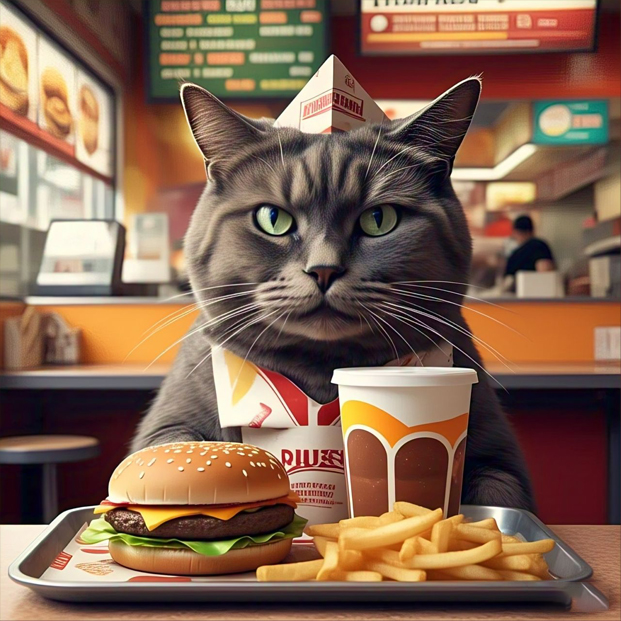

Lista de gastos hormiga que debes evitar
Gasto hormiga de pago de membresías mensuales
¿Pagaste por el gimnasio pero no vas? Las membresías de las tiendas de conveniencia, club, gimnasio y los servicios
de streaming que cargas automáticamente a tu tarjeta se pueden convertir en un gasto fantasma si no haces uso de ellas.
Haz una lista de los servicios que verdaderamente vas a utilizar y cancela los cargos a tu cuenta que realmente no
estás aprovechando. ¿Sabías que si realizas una inversión Actinver con el dinero que normalmente se desperdicia
en este tipo de membresías podrías acumular un
ahorro considerable; además de poner a trabajar ese dinero para ti?

Gasto hormiga de cargos adicionales por comisiones en tarjetas
Existen una gran cantidad de negocios que al momento de hacer un pago con tarjeta de crédito cobran una comisión
que ellos deberían de pagar. Este tipo de cobro está prohibido y debe ser reportado. Sin embargo, muchas personas
deciden pagar la comisión por ser mínima generando un gasto innecesario.

Gastos hormiga por compras impulsivas
Existen muchos gastos cotidianos que se convierten en gastos fantasmas porque la fuga de dinero que representan a largo
plazo es considerable. Los cafecitos, botanas, cigarros sueltos e incluso las compras no planeadas son gastos
fantasmas que debes evitar. También, existen otro tipo de compras impulsivas como cuando entras a la tienda de ropa
y no te llevas muchos artículos, pero se te pega una que otra cosa, que bien, terminará arrumbado en algún lugar de
tu casa o que simplemente podrás presindir de él.

Gastos hormiga por compras en apps de delivery y transporte
Si bien cuando utilizamos las apps de delivery para pedir comida o café nos ayuda a eficientizar nuestro tiempo,
también pueden ser una fuga de tu dinero muy importante si lo usas de forma indiscriminada. Ten en cuenta siempre ser consciente de tus gastos,
a veces más vale aminorar tu consumo, o caminar unas calles para llegar al establecimiento, mientras admiras el paisaje.
Así como puedes organizar tus gastos, también puedes hacer que tu dinero trabaje para ti, descubre cómo lograrlo a través
de la amplia gama de productos financieros que Actinver tiene para ti. Déjanos tus datos y un asesor especializado se
pondrá en contacto contigo. ¡Acostúmbrate a ganar más!

Los gastos hormiga pueden parecer insignificantes, pero pueden tener un impacto significativo
en nuestras finanzas. Al ser conscientes de estos gastos y
tomar medidas para evitarlos, podemos mejorar nuestra situación financiera y alcanzar
nuestros objetivos.